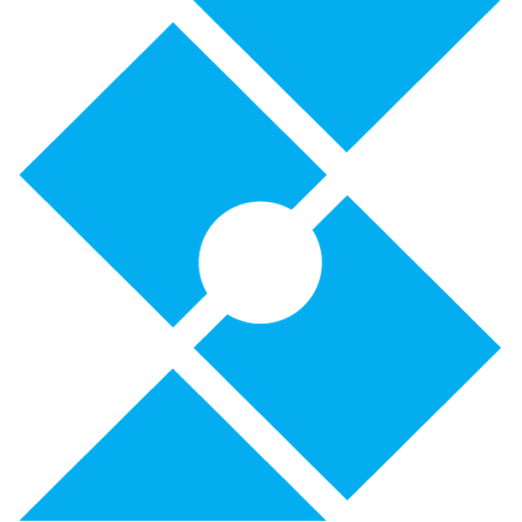
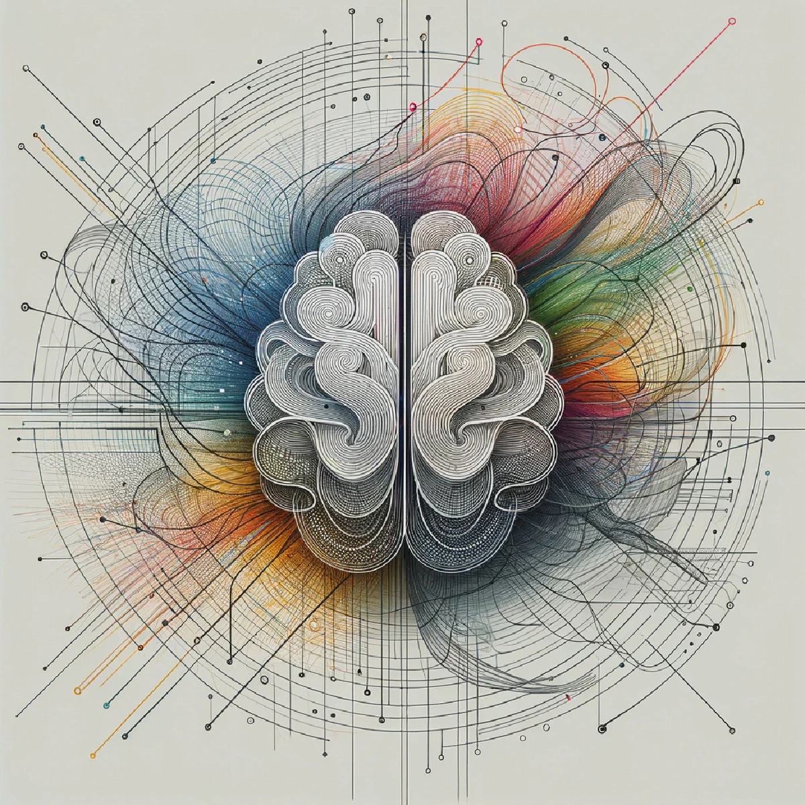

Shuai Liu
I am currently a Founding Team Member at  
Prior to this, I obtained my MEng (by Research) degree at MMLab@NTU, where I was fortunate to be advised by Prof. Ziwei Liu and to have received kind and valuable guidance from Jingkang Yang and Bo Li. I obtained my bachelor’s degree in Artificial Intelligence from BUPT in 2024. Additionally, I had a wonderful time as an intern at the Shanghai AI Laboratory under the mentorship of Prof. Ziwei Liu, and I also completed internships at NLPR@CASIA and HAOMO.AI, supervised by Prof. Yang Yang and Prof. Zhen Lei.
🔭 My research lies in Multimodality, Egocentric AI, and Agentic Memory.
Feel free to reach out to me for collaborations, questions, or just to chat!
| 📧Email: ls2001927@gmail.com | 📄Resume: CV |
news
| Feb 11, 2026 | Released Engram Teams 🧠 — upgraded version with team-based AI workflow support. |
|---|---|
| Feb 09, 2026 | Demo-ICL: In-Context Learning for Procedural Video Knowledge Acquisition 📹 is released on arXiv. |
| Feb 02, 2026 | Released Engram 🧠 — a privacy-first AI memory layer. |
| Jan 31, 2026 | Graduated from NTU 🎓 with MEng (by Research). Thesis: Egocentric Perception and Memory: From Embodied Understanding to a Lifelong Assistant |
| Jan 01, 2026 | Released a new blog post at Synvo AI: The Digital Avalanche: Building the Memory Layer for Next-Gen Corporation AI Agents 🧠 |
| Apr 29, 2025 | Aero-1-Audio 👂Introducing our first generation of lightweight audio models, outperforming larger models such as Whisper, Qwen-2-Audio, and ElevenLabs/Scribe. |
| Mar 01, 2025 | EgoLife👓 is accepted by CVPR 2025. |
| Jan 23, 2025 | LMMs-Eval⚖️ is accepted by NAACL2025 Findings. |
| Jan 01, 2025 | Joined Synvo AI as a Founding Team Member 🚀 |
| Aug 13, 2024 | Join MMLab@NTU as a master student! 🚀🚀🚀 |
| Jul 17, 2024 | We introduce LMMs-Eval, a comprehensive and efficient benchmark for evaluating Large Multimodal Models, alongside LMMs-Eval Lite and Multimodal Livebench, which ensure low-cost and contamination-free evaluations in dynamic environments. |
| Jul 01, 2024 | Octopus🐙 is accepted by ECCV-2024. |
| Jun 12, 2024 | We introduce lmms-eval/v0.2.0 to support video evaluations for video models like LLaVA-NeXT Video and Gemini 1.5 Pro across tasks such as EgoSchema, PerceptionTest, VideoMME, and more. |
| Oct 12, 2023 | We introduce Octopus, an embodied vision language programmer that plays GTA-V. |
| Aug 20, 2023 | PSG4D🤖 is accepted as NeurIPS-23 Spotlight. |
selected publications
-
 FileGram: Grounding Agent Personalization in File-System Behavioral Traces2026
FileGram: Grounding Agent Personalization in File-System Behavioral Traces2026 -
 Egocentric Perception and Memory: From Embodied Understanding to a Lifelong AssistantNanyang Technological University, 2025MEng Thesis
Egocentric Perception and Memory: From Embodied Understanding to a Lifelong AssistantNanyang Technological University, 2025MEng Thesis -